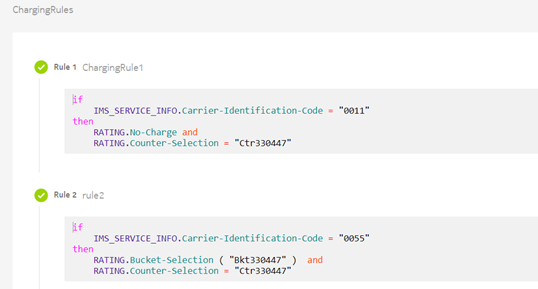

This feature allows you to consider international calls as domestic calls based on
Carrier Identification Code (CIC). International calls with a specific CIC are treated
as domestic voice calls for the purpose of rating. The CIC based on which international
calls are treated as domestic voice calls can be configured using the rule attributes
IMS-Information.Carrier-Select-Routing-Information and
IMS-Information.Carrier-Identification-Code
In addition to CIC during the VoLTE call processing, the presence of specific
subscriptions can also be checked for treating international calls as domestic
calls.
Configuration
The following rule configuration takes effect to enable this feature:

Use cases
Use case 1: Prepaid subscriber makes a VoLTE call to Canada and call is
treated as domestic
- Subscriber makes a VoLTE call to Canada.
- CCR-I has the Carrier-Select-Routing-Information AVP containing
Carrier Identification Code (CIC X).
- Rule configuration indicates VoLTE call with CIC X is treated as a
domestic call.
- Subscriber is not charged for the call to Canada.
Use case 2: Prepaid subscriber makes a VoLTE call to the Czech
Republic
- Subscriber makes a VoLTE call to Czech Republic.
- CCR-I has the Carrier-Select-Routing-Information AVP containing
Carrier Identification Code (CIC) Y.
- Rule configuration indicates that VoLTE call with CIC Y is treated as
international call.
- Subscriber is charged for the call the Czech Republic.
Use case 3: Usage Control (Wholesale or Retail) subscriber makes a VoLTE
call to Canada not during TOD and the number is not on the blocked list
- Subscriber makes a VoLTE call to Canada.
- CCR-I has the Carrier-Select-Routing-Information AVP containing
Carrier Identification Code (CIC) X.
- Rule configuration indicates that VoLTE call with CIC X is treated as
a domestic call.
- Subscriber is not charged for the call to Canada, and usage is calculated as
a domestic call.
- Carrier Identification Code is stored in the ASN.1 record.
Use case 4: Usage Control (Wholesale or Retail) subscriber makes a VoLTE
call to Czech Republic
- Subscriber makes a VoLTE call to Czech Republic.
- CCR-I has the Carrier-Select-Routing-Information AVP containing
Carrier Identification Code (CIC) Y.
- Rule configuration indicates CIC Y is treated as an international
call.
- Subscriber is charged for the call to the Czech Republic as a normal VoLTE
ILD call, and usage is calculated.
- Carrier Identification Code is stored in the ASN.1 record.